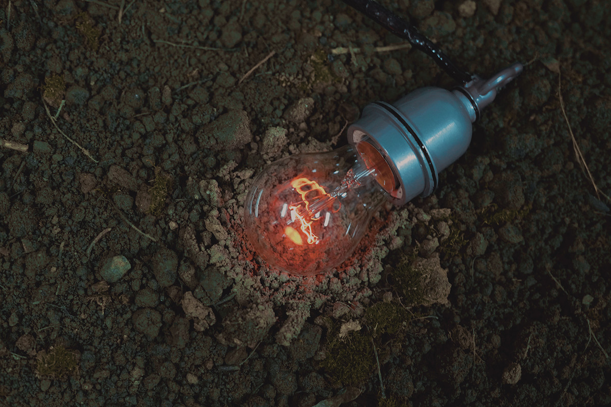

寂静的春天 | SILENT SPRING
土壤、白炽灯、单片机、木质抽屉
木质抽屉尺寸为50x40x15cm，摄影尺寸为120x80cm，影像为可变尺寸，灯泡为95W白炽灯，2024
Marble fragments, incandescent lamps, sound-absorbing devices, and voice-activated units, Variable size, 2024Soil, Incandescent Bulb, Microcontroller, Controller, Wooden Drawer, 2024
抽屉里的土壤上放置一个白炽灯泡，灯泡一直在闪烁，土壤里的水分缓慢的在展厅里蒸发，水土在灯泡的喃喃细语中慢慢分离。
灯泡里闪烁的是摩斯电码，来源于《寂静的春天》里摘选的一句话：“当春天变得寂静，我们才明白，那失去的不仅是鸟鸣和花香，更是我们内心的宁静与和谐”。
An incandescent bulb rests on the soil within a flat wooden drawer, flickering like a lonely, murmuring voice. As it flickers, moisture from the soil slowly evaporates into the exhibition space, creating a subtle separation between water and earth in a whispered monologue. The bulb's flickering encodes a message in Morse code, referencing a line from Silent Spring: "When spring falls silent, we realize that what we have lost is not just birdsong and fragrance, but also the inner peace and harmony within ourselves.”
《寂寞的春天》是美国小说家雷切尔·卡逊的环保读物，也曾被刘慈欣的科幻小说《三体》引用，讨论人类对于未来生态环境的担忧。
”Silent Spring“ is an environmental book written by American novelist Rachel Carson, which has also been quoted in Liu Cixin's science fiction novel "The Three-Body Problem" to discuss humanity's concerns about the future ecological environment.

寒山美术馆，苏州
Hanshan Art Museum, Suzhou
寒山美术馆，苏州
Hanshan Art Museum, Suzhou
寒山美术馆，苏州
Hanshan Art Museum, Suzhou